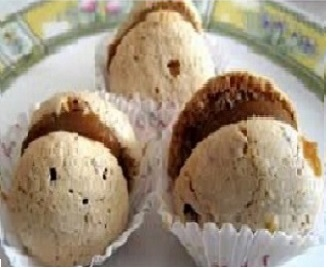

Recetas
Frutas decoradas

RANAS HECHAS CON FRUTILLAS: Mira a estas ranas hechas de frutillas y naranjas
Bien podrían adornar la mesa de bocaditos en el cumple de tu niño, o ser partes de
tus terroríficos postres ...
subir
Decorados saladitos

SANDWICH PARA NIÑOS: Este sandwich perfecto para ponérselo a los niños como almuerzo o merienda,
al ser vegetal puede tomarse en cualquier momento en frío, y les aportará muchas vitaminas. Una alimentación completa es necesaria para su crecimiento, por eso haz esta receta para tus hijos.
subir
Postre helado de dulce de leche y merengues

POSTRE. DULCE. Este postre lo prepare con cosas de la heladera. Todo sirve la cocina
Ingredientes
subir